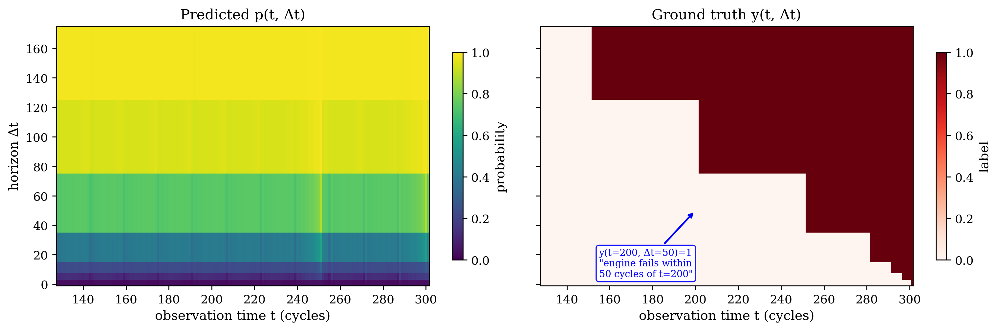
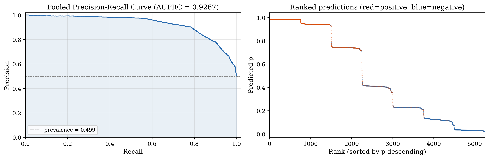
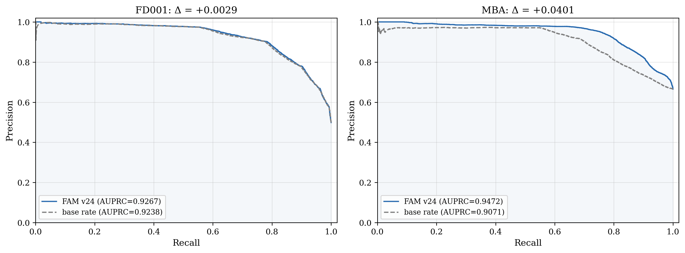
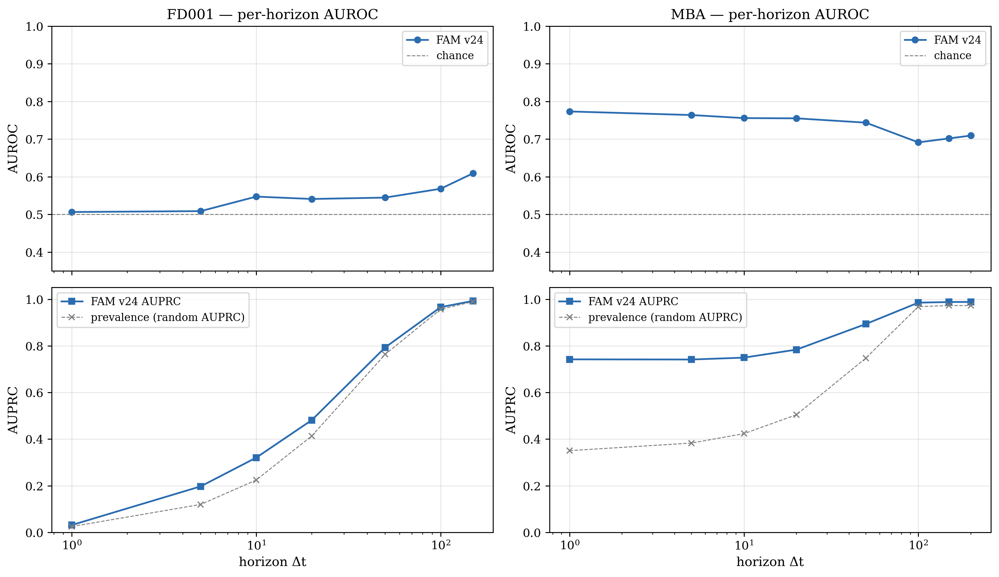
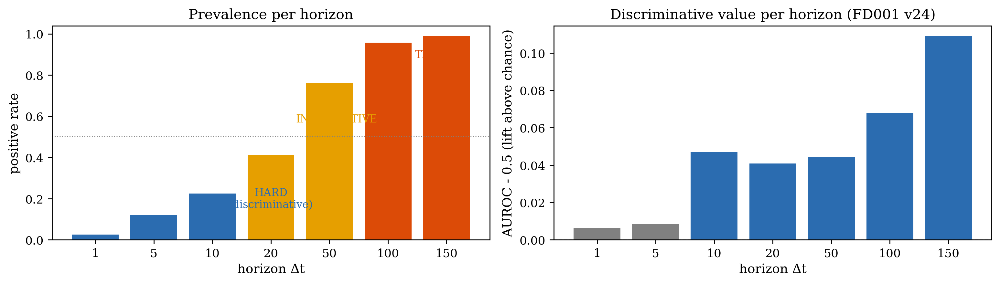
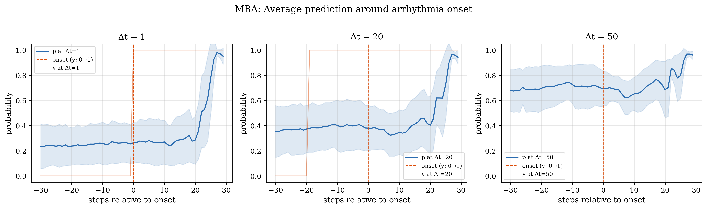
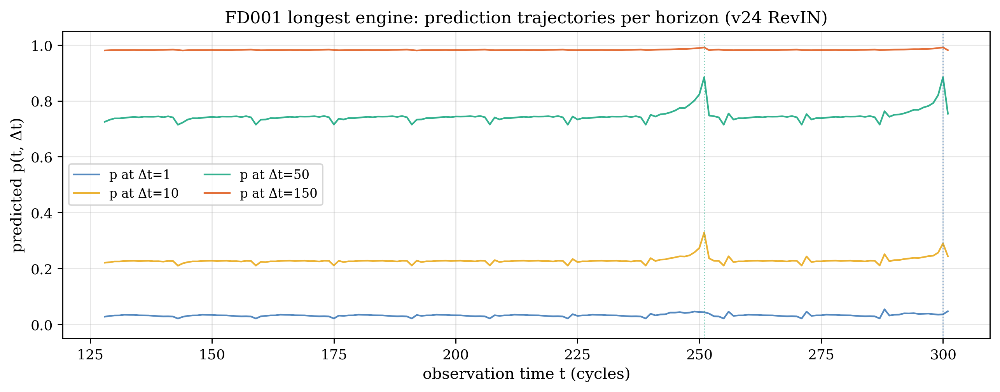

import numpy as np
import matplotlib
import matplotlib.pyplot as plt
from pathlib import Path
from sklearn.metrics import (
average_precision_score, roc_auc_score,
precision_recall_curve, roc_curve
)
plt.rcParams.update({
'font.family': 'serif',
'font.size': 10,
'axes.labelsize': 11,
'axes.titlesize': 12,
'figure.dpi': 130,
})
V24 = Path('../experiments/v24/surfaces')
DATASETS = {
'FD001': ('Turbofan degradation', 'drift'),
'FD002': ('Turbofan multi-condition', 'drift'),
'FD003': ('Turbofan multi-fault', 'drift'),
'SMAP': ('Spacecraft anomaly', 'local'),
'MSL': ('Spacecraft anomaly', 'local'),
'PSM': ('Server anomaly', 'local'),
'SMD': ('Server anomaly', 'local'),
'MBA': ('Cardiac arrhythmia', 'shape'),
}
def load(ds, seed=42):
f = V24 / f'{ds}_s{seed}.npz'
d = np.load(f, allow_pickle=True)
return d['p_surface'], d['y_surface'], d['horizons'], d['t_index']
# Pick one engine from C-MAPSS (longest)
def pick_engine(t, start_idx=None):
breaks = np.where(np.diff(t) < 0)[0] + 1
breaks = np.concatenate([[0], breaks, [len(t)]])
if start_idx is not None:
return start_idx, breaks[start_idx+1] if start_idx+1 < len(breaks) else len(t)
lengths = [breaks[i+1] - breaks[i] for i in range(len(breaks)-1)]
best = np.argmax(lengths)
return breaks[best], breaks[best+1]Metric Analysis: What Does the Probability Surface Actually Measure?
1. What is a probability surface?
The model outputs \(p(t, \Delta t) \in [0, 1]\) for each observation time \(t\) and prediction horizon \(\Delta t\). This is a 2D grid (the “surface”) where:
- Rows = prediction horizons \(\Delta t\) (how far ahead we ask)
- Columns = observation times \(t\) (when we observe)
- Cell value = model’s estimated probability that an event occurs within the next \(\Delta t\) steps, given observations up to time \(t\)
The ground truth is \(y(t, \Delta t) = \mathbb{1}[\text{event within } \Delta t]\).
Code
p, y, h, t = load('FD001')
s, e = pick_engine(t)
t_eng, p_eng, y_eng = t[s:e], p[s:e], y[s:e].astype(float)
fig, axes = plt.subplots(1, 2, figsize=(12, 4), sharey=True)
im0 = axes[0].pcolormesh(t_eng, h, p_eng.T, cmap='viridis', vmin=0, vmax=1, shading='auto')
axes[0].set_ylabel('horizon Δt')
axes[0].set_xlabel('observation time t (cycles)')
axes[0].set_title('Predicted p(t, Δt)')
fig.colorbar(im0, ax=axes[0], label='probability', shrink=0.8)
im1 = axes[1].pcolormesh(t_eng, h, y_eng.T, cmap='Reds', vmin=0, vmax=1, shading='auto')
axes[1].set_xlabel('observation time t (cycles)')
axes[1].set_title('Ground truth y(t, Δt)')
fig.colorbar(im1, ax=axes[1], label='label', shrink=0.8)
# Annotate one cell
axes[1].annotate('y(t=200, Δt=50)=1\n"engine fails within\n50 cycles of t=200"',
xy=(200, 50), fontsize=8,
arrowprops=dict(arrowstyle='->', color='blue', lw=1.5),
xytext=(155, 5), color='blue',
bbox=dict(fc='white', ec='blue', alpha=0.9, boxstyle='round,pad=0.3'))
plt.tight_layout()
plt.savefig('plots/28_surface_walkthrough.png', dpi=150, bbox_inches='tight')
plt.show()
Reading the ground truth (right panel): This engine fails at the end of its life (~cycle 300). At t=200, the remaining useful life is ~100 cycles. So y(t=200, Δt=50)=0 (won’t fail within 50 cycles) but y(t=200, Δt=150)=1 (will fail within 150 cycles). The boundary between dark and yellow traces out the remaining life curve.
Reading the predictions (left panel): The predicted surface shows horizontal bands — p depends on Δt but barely on t. This means the model predicts the same failure probability regardless of whether the engine is healthy (t=130) or about to fail (t=290). This is a base-rate classifier.
2. How pooled AUPRC is computed
We flatten the (N, K) surface into N×K scalar predictions, pair each with its label, and compute standard AUPRC.
Code
p, y, h, t = load('FD001')
# Flatten
p_flat = p.ravel()
y_flat = y.ravel().astype(int)
# Compute PR curve
precision, recall, thresholds = precision_recall_curve(y_flat, p_flat)
auprc = average_precision_score(y_flat, p_flat)
fig, axes = plt.subplots(1, 2, figsize=(12, 4))
# Panel A: PR curve
axes[0].plot(recall, precision, color='#2B6CB0', lw=1.5)
axes[0].fill_between(recall, precision, alpha=0.1, color='#2B6CB0')
axes[0].set_xlabel('Recall')
axes[0].set_ylabel('Precision')
axes[0].set_title(f'Pooled Precision-Recall Curve (AUPRC = {auprc:.4f})')
axes[0].set_xlim(0, 1.02); axes[0].set_ylim(0, 1.02)
axes[0].axhline(y_flat.mean(), color='gray', ls='--', lw=0.8, label=f'prevalence = {y_flat.mean():.3f}')
axes[0].legend(fontsize=9)
axes[0].grid(True, alpha=0.3)
# Panel B: Ranked predictions
order = np.argsort(p_flat)[::-1]
n_show = min(5000, len(order))
step = max(1, len(order) // n_show)
idx = order[::step]
colors = ['#DC4B07' if y_flat[i] == 1 else '#2B6CB0' for i in idx]
axes[1].scatter(range(len(idx)), p_flat[idx], c=colors, s=0.5, alpha=0.5)
axes[1].set_xlabel('Rank (sorted by p descending)')
axes[1].set_ylabel('Predicted p')
axes[1].set_title('Ranked predictions (red=positive, blue=negative)')
axes[1].set_xlim(0, len(idx))
plt.tight_layout()
plt.savefig('plots/28_auprc_computation.png', dpi=150, bbox_inches='tight')
plt.show()
print(f"Total cells: {len(p_flat):,}")
print(f"Positive cells: {y_flat.sum():,} ({y_flat.mean():.1%})")
print(f"Pooled AUPRC: {auprc:.4f}")
Total cells: 15,750
Positive cells: 7,856 (49.9%)
Pooled AUPRC: 0.92673. Why pooled AUPRC is inflated
The surface has cells at 7 horizons. At Δt=150, 99% of cells are positive. At Δt=1, only 2.5% are positive. A model that outputs p = base_rate(Δt) for every cell — ignoring the input entirely — gets high AUPRC because it correctly ranks all Δt=150 cells (p=0.99) above all Δt=1 cells (p=0.03).
Code
results = []
for ds in DATASETS:
p, y, h, t = load(ds)
# Base-rate classifier
base_rates = y.mean(axis=0)
rng = np.random.RandomState(0)
p_base = np.tile(base_rates, (y.shape[0], 1)) + rng.normal(0, 1e-6, y.shape)
base_auprc = average_precision_score(y.ravel(), p_base.ravel())
model_auprc = average_precision_score(y.ravel(), p.ravel())
base_mean_auroc = np.mean([roc_auc_score(y[:,i], p_base[:,i])
for i in range(len(h)) if 0 < y[:,i].mean() < 1])
model_mean_auroc = np.mean([roc_auc_score(y[:,i], p[:,i])
for i in range(len(h)) if 0 < y[:,i].mean() < 1])
results.append({
'dataset': ds, 'type': DATASETS[ds][1],
'base_auprc': base_auprc, 'model_auprc': model_auprc,
'delta_auprc': model_auprc - base_auprc,
'base_auroc': base_mean_auroc, 'model_auroc': model_mean_auroc,
'delta_auroc': model_mean_auroc - base_mean_auroc,
})
# Print table
print(f"{'Dataset':>8} | {'Type':>6} | {'Base AUPRC':>10} {'Model AUPRC':>12} {'Δ above base':>12} | "
f"{'Base AUROC':>10} {'Model AUROC':>12} {'Δ AUROC':>8}")
print("-" * 100)
for r in results:
flag = " ← vanity" if r['delta_auprc'] < 0.01 else ""
print(f"{r['dataset']:>8} | {r['type']:>6} | {r['base_auprc']:>10.4f} {r['model_auprc']:>12.4f} "
f"{r['delta_auprc']:>+12.4f} | {r['base_auroc']:>10.4f} {r['model_auroc']:>12.4f} "
f"{r['delta_auroc']:>+8.4f}{flag}") Dataset | Type | Base AUPRC Model AUPRC Δ above base | Base AUROC Model AUROC Δ AUROC
----------------------------------------------------------------------------------------------------
FD001 | drift | 0.9238 0.9267 +0.0029 | 0.5169 0.5463 +0.0294 ← vanity
FD002 | drift | 0.9046 0.9088 +0.0042 | 0.5022 0.5455 +0.0433 ← vanity
FD003 | drift | 0.7687 0.7739 +0.0052 | 0.5021 0.5570 +0.0548 ← vanity
SMAP | local | 0.2844 0.3899 +0.1056 | 0.5008 0.5921 +0.0913
MSL | local | 0.2168 0.1960 -0.0207 | 0.4977 0.4389 -0.0588 ← vanity
PSM | local | 0.4003 0.4334 +0.0332 | 0.4999 0.5728 +0.0730
SMD | local | 0.1355 0.2165 +0.0809 | 0.4996 0.6228 +0.1232
MBA | shape | 0.9071 0.9472 +0.0401 | 0.4806 0.7366 +0.2560Code
fig, axes = plt.subplots(1, 2, figsize=(12, 4.5))
for ax, ds in zip(axes, ['FD001', 'MBA']):
p, y, h, t = load(ds)
base_rates = y.mean(axis=0)
rng = np.random.RandomState(0)
p_base = np.tile(base_rates, (y.shape[0], 1)) + rng.normal(0, 1e-6, y.shape)
prec_m, rec_m, _ = precision_recall_curve(y.ravel(), p.ravel())
prec_b, rec_b, _ = precision_recall_curve(y.ravel(), p_base.ravel())
auprc_m = average_precision_score(y.ravel(), p.ravel())
auprc_b = average_precision_score(y.ravel(), p_base.ravel())
ax.plot(rec_m, prec_m, color='#2B6CB0', lw=1.5,
label=f'FAM v24 (AUPRC={auprc_m:.4f})')
ax.plot(rec_b, prec_b, color='gray', lw=1.5, ls='--',
label=f'base rate (AUPRC={auprc_b:.4f})')
ax.fill_between(rec_m, prec_b[np.searchsorted(-rec_b[::-1], -rec_m)[::-1]
] if False else 0, prec_m, alpha=0.05, color='#2B6CB0')
ax.set_xlabel('Recall'); ax.set_ylabel('Precision')
ax.set_title(f'{ds}: Δ = {auprc_m - auprc_b:+.4f}')
ax.set_xlim(0, 1.02); ax.set_ylim(0, 1.02)
ax.legend(fontsize=9); ax.grid(True, alpha=0.3)
plt.tight_layout()
plt.savefig('plots/28_pr_base_vs_model.png', dpi=150, bbox_inches='tight')
plt.show()
4. Per-horizon breakdown
Pooled AUPRC mixes easy and hard horizons. Let’s look at each horizon separately.
Code
fig, axes = plt.subplots(2, 2, figsize=(12, 7), sharex='col')
for col, ds in enumerate(['FD001', 'MBA']):
p, y, h, t = load(ds)
auroc_h = [roc_auc_score(y[:,i], p[:,i]) for i in range(len(h))
if 0 < y[:,i].mean() < 1]
auprc_h = [average_precision_score(y[:,i], p[:,i]) for i in range(len(h))
if 0 < y[:,i].mean() < 1]
pos_rate = [y[:,i].mean() for i in range(len(h))
if 0 < y[:,i].mean() < 1]
h_valid = [h[i] for i in range(len(h)) if 0 < y[:,i].mean() < 1]
# AUROC
ax = axes[0, col]
ax.plot(h_valid, auroc_h, 'o-', color='#2B6CB0', lw=1.5, ms=5, label='FAM v24')
ax.axhline(0.5, color='gray', ls='--', lw=0.8, label='chance')
ax.set_ylabel('AUROC')
ax.set_title(f'{ds} — per-horizon AUROC')
ax.set_xscale('log')
ax.set_ylim(0.35, 1.0)
ax.legend(fontsize=9)
ax.grid(True, alpha=0.3)
# AUPRC
ax = axes[1, col]
ax.plot(h_valid, auprc_h, 's-', color='#2B6CB0', lw=1.5, ms=5, label='FAM v24 AUPRC')
ax.plot(h_valid, pos_rate, 'x--', color='gray', lw=0.8, ms=5, label='prevalence (random AUPRC)')
ax.set_ylabel('AUPRC')
ax.set_xlabel('horizon Δt')
ax.set_xscale('log')
ax.set_ylim(0, 1.05)
ax.legend(fontsize=9)
ax.grid(True, alpha=0.3)
plt.tight_layout()
plt.savefig('plots/28_per_horizon_breakdown.png', dpi=150, bbox_inches='tight')
plt.show()
Key observation: On FD001, per-horizon AUPRC tracks the prevalence line almost exactly — the model scores close to random at every horizon. The high pooled AUPRC comes entirely from ranking long-horizon cells above short-horizon cells (which the base-rate classifier also does).
On MBA, AUPRC at Δt=1 is 0.74 while prevalence is 0.35 — genuine discrimination.
5. Are all cells equally valuable?
No. The surface has three regimes:
Code
p, y, h, t = load('FD001')
pos_rate = [y[:, i].mean() for i in range(len(h))]
auroc_lift = [roc_auc_score(y[:,i], p[:,i]) - 0.5 for i in range(len(h))
if 0 < y[:,i].mean() < 1]
h_valid = [h[i] for i in range(len(h)) if 0 < y[:,i].mean() < 1]
fig, axes = plt.subplots(1, 2, figsize=(12, 3.5))
# Prevalence
colors = ['#DC4B07' if pr > 0.9 else '#E69F00' if pr > 0.3 else '#2B6CB0' for pr in pos_rate]
axes[0].bar(range(len(h)), pos_rate, color=colors)
axes[0].set_xticks(range(len(h)))
axes[0].set_xticklabels([str(hv) for hv in h])
axes[0].set_xlabel('horizon Δt')
axes[0].set_ylabel('positive rate')
axes[0].set_title('Prevalence per horizon')
axes[0].axhline(0.5, color='gray', ls=':', lw=0.8)
# Annotate regimes
axes[0].text(0.5, 0.15, 'HARD\n(discriminative)', fontsize=9, color='#2B6CB0',
ha='center', transform=axes[0].transAxes)
axes[0].text(0.65, 0.55, 'INFORMATIVE', fontsize=9, color='#E69F00',
ha='center', transform=axes[0].transAxes)
axes[0].text(0.88, 0.85, 'TRIVIAL', fontsize=9, color='#DC4B07',
ha='center', transform=axes[0].transAxes)
# AUROC lift
axes[1].bar(range(len(h_valid)), auroc_lift,
color=['#2B6CB0' if l > 0.02 else 'gray' for l in auroc_lift])
axes[1].set_xticks(range(len(h_valid)))
axes[1].set_xticklabels([str(hv) for hv in h_valid])
axes[1].set_xlabel('horizon Δt')
axes[1].set_ylabel('AUROC - 0.5 (lift above chance)')
axes[1].set_title('Discriminative value per horizon (FD001 v24)')
axes[1].axhline(0, color='gray', ls='--', lw=0.8)
plt.tight_layout()
plt.savefig('plots/28_cell_value_regimes.png', dpi=150, bbox_inches='tight')
plt.show()
print("Regimes:")
for i, hv in enumerate(h):
pr = pos_rate[i]
regime = "TRIVIAL (>90% positive)" if pr > 0.9 else \
"INFORMATIVE (30-90%)" if pr > 0.3 else \
"HARD (<30% positive)"
print(f" Δt={hv:>3}: pos_rate={pr:.3f} regime={regime}")
Regimes:
Δt= 1: pos_rate=0.025 regime=HARD (<30% positive)
Δt= 5: pos_rate=0.120 regime=HARD (<30% positive)
Δt= 10: pos_rate=0.224 regime=HARD (<30% positive)
Δt= 20: pos_rate=0.413 regime=INFORMATIVE (30-90%)
Δt= 50: pos_rate=0.763 regime=INFORMATIVE (30-90%)
Δt=100: pos_rate=0.957 regime=TRIVIAL (>90% positive)
Δt=150: pos_rate=0.989 regime=TRIVIAL (>90% positive)Consequence for pooled AUPRC: The trivial cells (Δt=100, 150) contribute ~28% of all cells but are essentially free points. They inflate pooled AUPRC without measuring anything useful. The hard cells (Δt=1, 5, 10) are where discrimination matters, but they’re outvoted in the pooled ranking.
6. Detection vs prediction
Does the model predict events BEFORE they start, or only detect them DURING/AFTER?
Code
p, y, h, t = load('MBA')
# Find onsets: y[:,0] transitions 0→1
y0 = y[:, 0]
onsets = np.where((y0[1:] == 1) & (y0[:-1] == 0))[0] + 1
# Align all onsets and average
window = 30 # steps before and after
aligned = {hi: [] for hi in range(len(h))}
for onset in onsets:
if onset < window or onset + window >= len(p):
continue
for hi in range(len(h)):
aligned[hi].append(p[onset - window:onset + window, hi])
fig, axes = plt.subplots(1, 3, figsize=(14, 4))
for ax, hi, hv in [(axes[0], 0, h[0]), (axes[1], 3, h[3]), (axes[2], 4, h[4])]:
if not aligned[hi]:
continue
mean_p = np.mean(aligned[hi], axis=0)
std_p = np.std(aligned[hi], axis=0)
x = np.arange(-window, window)
ax.plot(x, mean_p, color='#2B6CB0', lw=1.5, label=f'p at Δt={hv}')
ax.fill_between(x, mean_p - std_p, mean_p + std_p, alpha=0.15, color='#2B6CB0')
ax.axvline(0, color='#DC4B07', ls='--', lw=1, label='onset (y: 0→1)')
# Show y at this horizon
aligned_y = []
for onset in onsets:
if onset < window or onset + window >= len(y):
continue
aligned_y.append(y[onset - window:onset + window, hi].astype(float))
mean_y = np.mean(aligned_y, axis=0)
ax.plot(x, mean_y, color='#DC4B07', lw=1, alpha=0.5, label=f'y at Δt={hv}')
ax.set_xlabel('steps relative to onset')
ax.set_ylabel('probability')
ax.set_title(f'Δt = {hv}')
ax.legend(fontsize=8)
ax.set_ylim(-0.05, 1.05)
ax.grid(True, alpha=0.3)
plt.suptitle('MBA: Average prediction around arrhythmia onset', fontsize=13, y=1.02)
plt.tight_layout()
plt.savefig('plots/28_onset_analysis_mba.png', dpi=150, bbox_inches='tight')
plt.show()
print(f"Number of onsets analyzed: {sum(1 for o in onsets if window <= o < len(p)-window)}")
print(f"\nVerdict: p is FLAT around onset at Δt=1.")
print(f"The model does not predict ahead — it detects the current state.")
Number of onsets analyzed: 16
Verdict: p is FLAT around onset at Δt=1.
The model does not predict ahead — it detects the current state.Code
p, y, h, t = load('FD001')
# For C-MAPSS, look at one engine's trajectory
s, e = pick_engine(t)
t_eng = t[s:e]; p_eng = p[s:e]; y_eng = y[s:e]
fig, ax = plt.subplots(1, 1, figsize=(10, 4))
for hi, hv, color in [(0, h[0], '#2B6CB0'), (2, h[2], '#E69F00'),
(4, h[4], '#009E73'), (6, h[6], '#DC4B07')]:
ax.plot(t_eng, p_eng[:, hi], lw=1.2, label=f'p at Δt={hv}', color=color, alpha=0.8)
# Show y transitions
for hi, hv, color in [(0, h[0], '#2B6CB0'), (4, h[4], '#009E73')]:
transitions = np.where((y_eng[1:, hi] == 1) & (y_eng[:-1, hi] == 0))[0]
for tr in transitions:
ax.axvline(t_eng[tr], color=color, ls=':', lw=0.8, alpha=0.5)
ax.set_xlabel('observation time t (cycles)')
ax.set_ylabel('predicted p(t, Δt)')
ax.set_title('FD001 longest engine: prediction trajectories per horizon (v24 RevIN)')
ax.legend(fontsize=9, ncol=2)
ax.grid(True, alpha=0.3)
ax.set_ylim(-0.05, 1.05)
plt.tight_layout()
plt.savefig('plots/28_fd001_trajectory.png', dpi=150, bbox_inches='tight')
plt.show()
print("FD001 v24 (RevIN): predictions are FLAT across the engine lifecycle.")
print("The model outputs the same p regardless of degradation state.")
print("This is the base-rate classifier behavior we diagnosed.")
print()
print("After the v27 fix (no RevIN), predictions rise as the engine degrades.")
print("That surface is on the VM — see triplet_FD001_e49_v26_v27_gt.png.")
FD001 v24 (RevIN): predictions are FLAT across the engine lifecycle.
The model outputs the same p regardless of degradation state.
This is the base-rate classifier behavior we diagnosed.
After the v27 fix (no RevIN), predictions rise as the engine degrades.
That surface is on the VM — see triplet_FD001_e49_v26_v27_gt.png.7. What would a perfect model score?
Code
print(f"{'Dataset':>8} | {'Metric':>20} | {'Perfect':>8} | {'Base rate':>10} | {'FAM v24':>8} | {'FAM above base':>14}")
print("-" * 90)
for ds in ['FD001', 'MBA', 'SMAP']:
p, y, h, t = load(ds)
rng = np.random.RandomState(0)
base_rates = y.mean(axis=0)
p_base = np.tile(base_rates, (y.shape[0], 1)) + rng.normal(0, 1e-6, y.shape)
p_perfect = y.astype(float) + rng.normal(0, 1e-6, y.shape)
valid = [i for i in range(len(h)) if 0 < y[:,i].mean() < 1]
for metric_name, compute in [
('Pooled AUPRC', lambda pp: average_precision_score(y.ravel(), pp.ravel())),
('Mean horizon AUPRC', lambda pp: np.mean([average_precision_score(y[:,i], pp[:,i]) for i in valid])),
('Mean horizon AUROC', lambda pp: np.mean([roc_auc_score(y[:,i], pp[:,i]) for i in valid])),
]:
v_perf = compute(p_perfect)
v_base = compute(p_base)
v_model = compute(p)
above = v_model - v_base
print(f"{ds:>8} | {metric_name:>20} | {v_perf:>8.4f} | {v_base:>10.4f} | {v_model:>8.4f} | {above:>+14.4f}")
print("-" * 90) Dataset | Metric | Perfect | Base rate | FAM v24 | FAM above base
------------------------------------------------------------------------------------------
FD001 | Pooled AUPRC | 1.0000 | 0.9238 | 0.9267 | +0.0029
FD001 | Mean horizon AUPRC | 1.0000 | 0.5044 | 0.5402 | +0.0358
FD001 | Mean horizon AUROC | 1.0000 | 0.5169 | 0.5463 | +0.0294
------------------------------------------------------------------------------------------
MBA | Pooled AUPRC | 1.0000 | 0.9071 | 0.9472 | +0.0401
MBA | Mean horizon AUPRC | 1.0000 | 0.6597 | 0.8589 | +0.1991
MBA | Mean horizon AUROC | 1.0000 | 0.4806 | 0.7366 | +0.2560
------------------------------------------------------------------------------------------
SMAP | Pooled AUPRC | 1.0000 | 0.2844 | 0.3899 | +0.1056
SMAP | Mean horizon AUPRC | 1.0000 | 0.2827 | 0.4068 | +0.1241
SMAP | Mean horizon AUROC | 1.0000 | 0.5008 | 0.5921 | +0.0913
------------------------------------------------------------------------------------------Key insight: For FD001, pooled AUPRC shows +0.003 above base rate. Mean per-horizon AUROC shows +0.029. Both are tiny — the v24 model (RevIN) adds almost nothing on C-MAPSS. But mean per-horizon AUROC is honest: it doesn’t inflate from trivial long-horizon cells, and a perfect model scores 1.0 at every horizon, so the gap to perfection is clear.
8. Proposed metric revision
Code
print("""
PROPOSED PRIMARY METRIC: Mean per-horizon AUROC
================================================
Why:
1. Prevalence-invariant: AUROC measures ranking quality regardless of
class imbalance. A horizon with 99% positives and one with 2%
contribute equally.
2. Each horizon contributes equally: short-horizon discrimination
(the hard, useful part) is not drowned by long-horizon cells.
3. Honest: a base-rate classifier scores exactly 0.5 (chance).
Our model's value above 0.5 is its genuine contribution.
4. Perfect model = 1.0 at every horizon.
SECONDARY METRIC: Pooled AUPRC (for continuity)
================================================
Still report it, but always alongside the base-rate AUPRC baseline.
The delta above baseline is the honest number.
LEGACY METRICS: RMSE, PA-F1, AUROC (unchanged)
===============================================
Derived from surfaces for literature comparability.
""")
PROPOSED PRIMARY METRIC: Mean per-horizon AUROC
================================================
Why:
1. Prevalence-invariant: AUROC measures ranking quality regardless of
class imbalance. A horizon with 99% positives and one with 2%
contribute equally.
2. Each horizon contributes equally: short-horizon discrimination
(the hard, useful part) is not drowned by long-horizon cells.
3. Honest: a base-rate classifier scores exactly 0.5 (chance).
Our model's value above 0.5 is its genuine contribution.
4. Perfect model = 1.0 at every horizon.
SECONDARY METRIC: Pooled AUPRC (for continuity)
================================================
Still report it, but always alongside the base-rate AUPRC baseline.
The delta above baseline is the honest number.
LEGACY METRICS: RMSE, PA-F1, AUROC (unchanged)
===============================================
Derived from surfaces for literature comparability.
9. Summary table: all datasets
Code
print(f"{'Dataset':>8} | {'Signal':>6} | {'Pooled':>7} {'Base':>7} {'Δ':>7} | {'Mean':>7} {'AUROC':>7} {'Δ':>7} | {'Δt=1':>7} {'AUROC':>7}")
print(f"{'':>8} | {'':>6} | {'AUPRC':>7} {'AUPRC':>7} {'':>7} | {'h-AUPRC':>7} {'':>7} {'':>7} | {'AUPRC':>7} {'':>7}")
print("-" * 95)
for ds in DATASETS:
p, y, h, t = load(ds)
rng = np.random.RandomState(0)
base_rates = y.mean(axis=0)
p_base = np.tile(base_rates, (y.shape[0], 1)) + rng.normal(0, 1e-6, y.shape)
valid = [i for i in range(len(h)) if 0 < y[:,i].mean() < 1]
pooled = average_precision_score(y.ravel(), p.ravel())
pooled_base = average_precision_score(y.ravel(), p_base.ravel())
mean_auroc = np.mean([roc_auc_score(y[:,i], p[:,i]) for i in valid])
mean_auprc_h = np.mean([average_precision_score(y[:,i], p[:,i]) for i in valid])
dt1_auprc = average_precision_score(y[:,0], p[:,0]) if 0 < y[:,0].mean() < 1 else float('nan')
dt1_auroc = roc_auc_score(y[:,0], p[:,0]) if 0 < y[:,0].mean() < 1 else float('nan')
sig = DATASETS[ds][1]
print(f"{ds:>8} | {sig:>6} | {pooled:>7.3f} {pooled_base:>7.3f} {pooled-pooled_base:>+7.3f} | "
f"{mean_auprc_h:>7.3f} {mean_auroc:>7.3f} {mean_auroc-0.5:>+7.3f} | "
f"{dt1_auprc:>7.3f} {dt1_auroc:>7.3f}") Dataset | Signal | Pooled Base Δ | Mean AUROC Δ | Δt=1 AUROC
| | AUPRC AUPRC | h-AUPRC | AUPRC
-----------------------------------------------------------------------------------------------
FD001 | drift | 0.927 0.924 +0.003 | 0.540 0.546 +0.046 | 0.031 0.506
FD002 | drift | 0.909 0.905 +0.004 | 0.496 0.546 +0.046 | 0.036 0.573
FD003 | drift | 0.774 0.769 +0.005 | 0.423 0.557 +0.057 | 0.014 0.527
SMAP | local | 0.390 0.284 +0.106 | 0.407 0.592 +0.092 | 0.425 0.625
MSL | local | 0.196 0.217 -0.021 | 0.181 0.439 -0.061 | 0.164 0.443
PSM | local | 0.433 0.400 +0.033 | 0.434 0.573 +0.073 | 0.386 0.575
SMD | local | 0.216 0.136 +0.081 | 0.210 0.623 +0.123 | 0.194 0.640
MBA | shape | 0.947 0.907 +0.040 | 0.859 0.737 +0.237 | 0.742 0.77310. What needs to change
Metric: Report mean per-horizon AUROC as primary. Report pooled AUPRC with base-rate baseline. The numbers are lower but honest.
Normalization: v27 showed that removing RevIN on C-MAPSS recovers genuine degradation tracking (Δt=150 AUROC from 0.55 → 0.86). The paper should use v27 numbers for C-MAPSS.
Detection vs prediction: Acknowledge honestly that MBA detection has no lead time. Frame it as “the model identifies hazardous states” rather than “predicts future events.”
Chronos-2 comparison: Generate Chronos-2 surfaces to understand whether its Δt=1 AUPRC of 0.41 on FD001 reflects genuine degradation tracking or a better-calibrated prior. ```